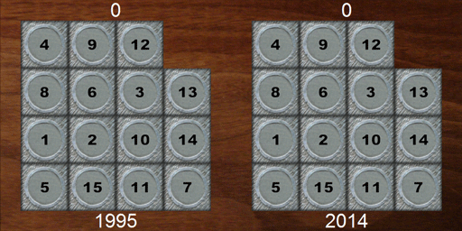
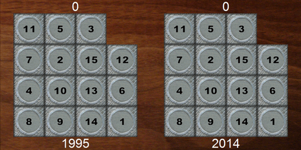
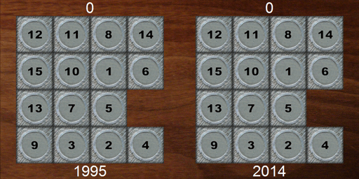

Ian Parberry,
"A Memory-Efficient Method for Fast Computation of Short 15-Puzzle Solutions",
IEEE Transactions on Computational Intelligence and AI in Games,
Vol. 7, No. 2, pp. 200-203, 2015.
[pdf from IEEEXplore]
Abstract
While the 15-puzzle has a long and interesting history dating back to the 1870s,
it still continues to appear as
apps on mobile devices and as minigames inside larger video games.
We demonstrate a method for solving the 15-puzzle
using only 4.7MB of tables
that on a million random instances was able to
find solutions of 65 moves on average and
95 moves in the worst case in under a tenth of a millisecond per solution
on current desktop computing hardware.
These numbers compare favorably to the worst-case upper bound of 80 moves
and to the greedy algorithm published in 1995, which required
118 moves on average and
195 moves in the worst case.
My PhD student Josh Taylor translated my C++ into ActionScript and produced the Flash
animation below.
If you are on one of those devices that don't allow Flash, you'll have to content yourself
with the animated gifs in the next section.
Hit the space bar to scramble the tiles, and hit the Enter key to
start solving. You can hit space or Enter at any time to stop the animation.
In the following animations, the left-hand board
shows the solution found by the greedy algorithm from
my 1995 paper,
while the right-hand board shows the much shorter solution found by the new algorithm.
Greedy Algorithm 95 Moves, New Algorithm 65 Moves

Greedy Algorithm 115 Moves, New Algorithm 67 Moves

Greedy Algorithm 131 Moves, New Algorithm 75 Moves

A preliminary version of this paper
was published as
Technical Report LARC-2014-02,
Laboratory for Recreational Computing,
Department of Computer Science and Engineering, University of North Texas, April 2014.
[BibTeX,
pdf]